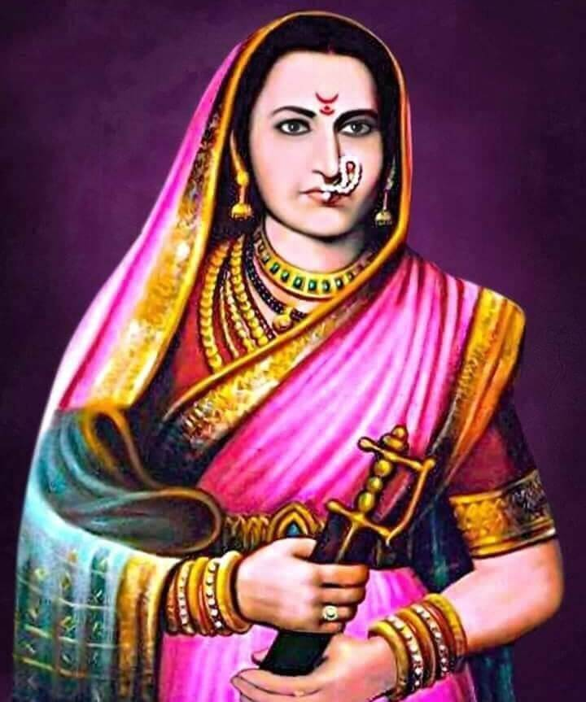

jijabai
1598 - 1674
Rajmata Jijabai : Shivaji Maharaj’s inspiration and Hindavi Swaraj visionary
Jijabai was Shahjiraje’s wife and Chatrapati Shivaji Maharaj’s mother, she was the queen and Rajmata too. She moulded him into an ideal ruler by sowing seeds of devotion to the nation and Dharma. She was not only a mother to Shivaji, but also a source of inspiration. She had a strong faith that she was blessed by Goddess Bhavani and Mahadev. She strongly believed that our efforts bring success to our doorstep only with the grace of God.
Early years of Jijabai
- Jijabai was born to Lakhojiraje Jadhav in Sindkhed territory of Vidharbh, Maharashtra in the year 1598 A.D.
- She was affectionately called as ‘jiu’.
- Lakhojiraje Yadav was a Yadava, traditionally the rules of Devgiri.